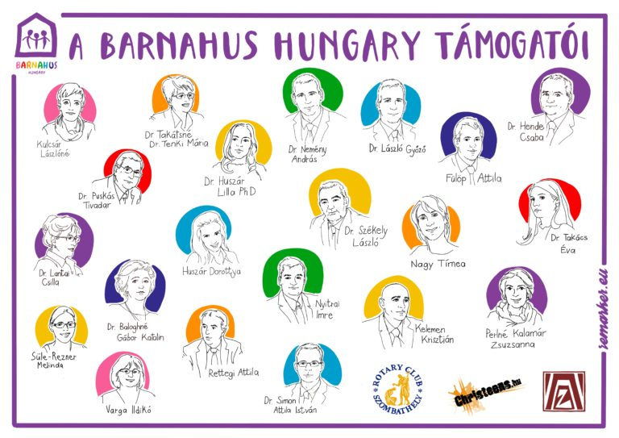

Barnahus Egyesület
Szombathelyen élő és dolgozó szakemberek, akik hisznek a gyermeknek.

Kik vagyunk?
A stáb
A Barnahus stáb tagjai Szombathelyen élnek és dolgoznak, többen évtizedek óta a gyermekvédelmi alap- és szakellátásban. Az utóbbi években megdöbbenve tapasztaljuk, hogy egyre több olyan gyermek kerül kiemelésre a családból, akit a szexuális bántalmazás valamilyen formája ért – nagyon súlyosan vagy folytatólagosan.
ELLENŐRIZENDŐ A bemutatkozó eredeti szövegének egy része (konkrét esetleírások) a forrásképből nehezen olvasható; élesítés előtt az eredetiből pótlandó.
A jelképünk
Kintsugi – ami eltört, arannyal forr össze
2013-ban, amikor először hallottunk a Barnahusról, elhatároztuk, hogy megcsináljuk.
A japán keramikusok nagy gonddal készítik kintsugi kerámiáikat: ha égetés közben egy edény megreped vagy széttörik, nem dobják szemétre, hanem arannyal ragasztják össze. 2015-ben ezt a vázát választottuk a Barnahus-munkánk szimbólumává – és meglepve láttuk 2016 januárjában Zágrábban, hogy az ottani Barnahus stáb munkájának is ez a jelképe.
Küldetésünk
Komplex szolgáltatás a gyermekért
A Barnahus-modell komplex szolgáltatást nyújt az abúzus gyermekáldozatainak a gyermekbarát igazságszolgáltatás és a gyermekvédelem együttes munkájával. Mindig hiszünk a gyermekeknek, és mindig képviseljük a mindenek felett álló érdeküket. Minden esetben úgy nyújtunk komplex szolgáltatást, hogy egyszerre több szaktudományt kapcsolunk össze, és serkentjük a szervezetek közötti együttműködést.
Értékeink
Öt elv, ami vezet minket
Mindig hiszünk a gyermeknek
A gyermek beszámolása a kiindulópont – komolyan vesszük.
A gyermek érdekét képviseljük
A mindenek felett álló érdek vezérli minden döntésünket.
Komplex szolgáltatást nyújtunk
Az abúzus gyermekáldozatainak egy helyen, összehangoltan.
Több szaktudományt kapcsolunk össze
Pszichológia, orvoslás, jog, szociális munka együtt.
Serkentjük az együttműködést
A szervezetek közötti közös munka teszi hatékonnyá a védelmet.
Trust · Advocacy · Care · Multidisciplinarity · Interagency
Jövőképünk
Amiért dolgozunk
Barnahus Hungary
Hogy minden bántalmazott gyermek számára hozzáférhetővé váljon a minden megyében elérhető Barnahus-szolgáltatás.
Barnahus Szombathely
Hogy minden Vas megyei áldozattá vált gyermek megkapja a szolgáltatást; hogy a Nemzeti Tudásközpontban fejlesszük a szakmai kapacitást; és hogy a bírók bekapcsolódjanak a gyermekbarát igazságszolgáltatás és a gyermekvédelem együttes munkájába.
Köszönet
A Barnahus Hungary támogatói
A munkánkat számos szakember és szervezet segíti. ELLENŐRIZENDŐ: a kézzel rajzolt illusztráció névsora élesítés előtt hitelesítendő.
